기계설계기사 (2011-06-12 기출문제)
1과목: 재료역학
1. 그림과 같이 길이 100cm의 외팔보에 2개의 집중하중이 작용할 때 C점에서의 굽힘모멘트는 몇 N·m 인가?
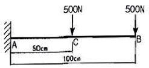
- 250
- 500
- 750
- 1000
(정답률: 44%)

2. 그림에서 A는 고압 증기 터빈, B는 저압 증기 터빈이고 내경 60cm, 외경 65cm인 파이프로 연결되어 있다. 20℃에서 연결하고 운전 중 300℃ 증기가 중공축내에 흐른다. 이 때 파이프에 발생하는 평균 열응력은 약 몇 MPa 인가? (단, E = 200 GPa, α = 1.2 × 10-5/℃, A, B는 이동되지 않음)
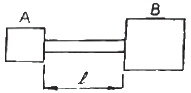
- 2⑤
- 230
- 354
- 672
(정답률: 36%)
3. 그림과 같이 길이 2ℓ인 보에 균일분포 하중 w가 작 용할 때 지지점을 δ만큼 낮추면 중앙점에서의 반력은? (단, 보의 굽힘강성 EI는 일정하다.)
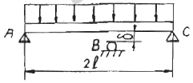
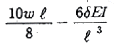
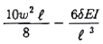
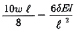
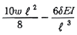
(정답률: 54%)
4. 보의 자중을 무시할 때 그림과 같이 자유단 C에 집중하중 P가 작용할 때 B점에서 처짐 곡선의 기울기각 Θ을 탄성계수 E, 단면 2차모멘트 I로 나타내면?
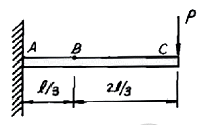
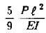
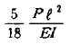
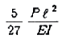
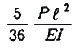
(정답률: 42%)
5. 원형 단면의 길이 2m인 장주가 양단 회전으로 지지되고 25kN의 압축하중을 받을 때 좌굴에 대한 안전계수를 5로 하면 기둥의 직경은 몇 cm로 해야 되겠는가? (단, Euler 공식을 적용하고, 탄성계수는 10 GPa이다.)
- 10.08
- 8.08
- 12.08
- 14.08
(정답률: 50%)
6. 다음 그림에서 A지점의 반력 RA는?
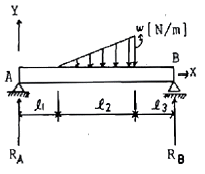
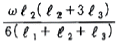
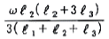
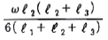
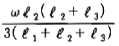
(정답률: 40%)
7. 길이가 L이고 반경이 r0인 원통형의 나사를 끼워 넣을 때 나사의 단위 길이 당 t0의 토크가 필요하다. 나사 재질의 전단 탄성계수가 G일 때 나사 끝단 간의 비틀림 회전량은 얼마인가?
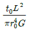
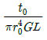
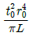
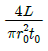
(정답률: 47%)
8. 지름 d=3cm 의 환봉이 P=25kN의 전단하중을 받아서 0.00075 의 전단 변형률을 발생시켰다. 이 때 재료의 전단탄성계수는 약 몇 GPa 인가?
- 87.7
- 97.7
- 47.2
- 57.2
(정답률: 64%)
9. 폭이 2cm이고 높이가 3cm인 단면을 가진 길이 50cm의 외팔보의 고정단에서 40cm 되는 곳에 800N의 집중하중을 작용시킬 때 자유단의 처짐은 약 몇 mm인가? (단, 탄성계수는 E = 2.1x107N/cm2이다.)
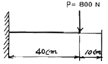
- 5.5
- 4.5
- 3.5
- 2.5
(정답률: 14%)
10. 원형 단면에 전단력 V가 그림과 같이 작용할 때 원주상에 작용하는 전단응력이 0 이 되는 지점은?
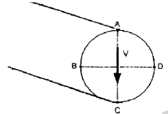
- A, B
- A, B, C, D
- A, C
- B, D
(정답률: 34%)
11. 폭 90mm,두께18mm강판에 세로(종) 방향으로 50kN 전단력이 작용할 때, 전단 탄성계수가 G = 80GPa이면 전단 변형률은?
- 1.9 x 10-4
- 2.6 x 10-4
- 3.8 x 10-4
- 4.8 x 10-4
(정답률: 39%)
12. 바깥지름 40cm, 안지름 20cm의 속이 빈 축은 동일한 단면적을 가지며 같은 재질의 원형축에 비하여 약 몇 배의 비틀림 모멘트에 견딜 수 있는가?
- 0.9배
- 1.2배
- 1.4배
- 1.6배
(정답률: 50%)
13. 지름 3cm인 강축이 회전수 1590rpm 으로 26.5kW의 동력을 전달하고 있다. 이 축에 발생하는 최대 전단응력은 약 몇 MPa 인가?
- 30
- 40
- 50
- 60
(정답률: 22%)
14. 평면 응력상태의 한 요소에 σx = 100MPa, σy = 50MPa, τxy = 0 을 받는 평판에서 평면 내에서 발생하는 최대 전단응력은 몇 MPa 인가?
- 25
- 50
- 75
- 0
(정답률: 47%)
15. 그림과 같이 W=200N 의 깅구가 판 사이에 끼여있을 때, 접촉점 A에서의 반력 RA는 약 몇 N인가? (단, 접촉점에서의 마찰은 무시한다.)
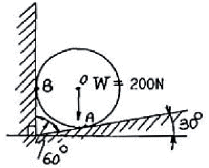
- 231
- 323
- 415
- 502
(정답률: 48%)
16. 그림과 같은 단면의 중립축에 대한 단면 2차모멘트는?
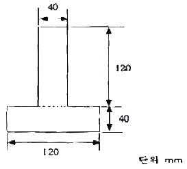
- 21.76 x 106 mm4
- 35.76 x 106 mm4
- 217.6 x 106 mm4
- 357.6 x 106 mm4
(정답률: 28%)
17. 그림과 같은 외팔보에서 허용 굽힘응력 σa=50kN/cm2이라할 때, 최대 하중 P는 약 몇 kN인가? (단, 보의 단면은 10cm x 10cm 이다.)
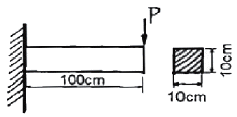
- 110.5
- 100.0
- 95.6
- 83.3
(정답률: 44%)
18. 그림과 같은 단붙이 봉에 인장하중 P가 작용할 때, 축의 지름을 d1 : d2 = 3 :2 로 하면 d1 부분에 발생하는 응력 σ1과 d2 부분에 발생하는 응력 σ2의 비는?
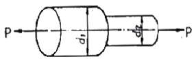
- σ1 : σ2 = 3 : 2
- σ1 : σ2 = 2 : 3
- σ1 : σ2 = 9 : 4
- σ1 : σ2 = 4 : 9
(정답률: 69%)
19. 반경 r, 압력 P, 두께 t인 실린더형 압력용기에서 발생되는 절대 최대 전단응력(3차원 응력상태에서의 최대 전단응력)의 크기는?
- Pr/2t
- Pr/t
- Pr/4t
- 2Pr/t
(정답률: 59%)
20. 다음 그림에서 2kN의 힘을 전달하는 키(15 x 10 x 60mm)가 있다. 이 키(Key)에 생기는 전단응력은 몇 MPa인가?
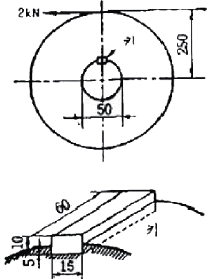
- 66.7
- 44.4
- 22.2
- 12.3
(정답률: 34%)
2과목: 기계제작법
21. 두께 2mm인 연강판에서 지름 100mm의 원을 펀칭하는데 필요한 힘은 약 몇 kN인가? (단, 연강판의 전단저항은 300MPa이다.)
- 255.2
- 468.4
- 188.5
- 376.8
(정답률: 67%)
22. 압연가공에서 압하율을 나타낸 식은? (단, Ho = 압연 전 두께, H1 = 압연 후 두께이고, Ao = 압연 전 단면적, A1 = 압연 후 단면적이다.)
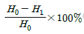
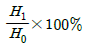
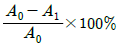
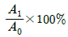
(정답률: 72%)
23. 코어가 없이 원통형 주물을 제조할 수 있는 주조방법은?
- 연속주조방법
- 원심주조방법
- 저압주조방법
- 다이캐스팅법
(정답률: 65%)
24. 용접 결함에 있어서 언더컷(under cut)이 발생하는 원인으로 거리가 먼 것은?
- 아크 길이가 너무 길 때
- 전류가 너무 낮을 때
- 용접속도가 적당하지 않을 때
- 부적당한 용접봉을 사용했을 때
(정답률: 58%)
25. 회전하는 상자에 공작물과 숫돌 입자, 공작액, 컴파운드 등을 함께 넣어 공작물이 입자와 충돌하는 동안에 그 표면의 요철을 제거하며, 매끈한 가공면을 얻는 가공법은?
- 숏 피닝
- 전해 가공
- 초음파 가공
- 배럴 가공
(정답률: 67%)
26. 기어 가공법 중 인벌류트 치형을 정확하게 가공할 수 있는 방법으로 래크 커터 또는 호브를 이용한 가공 방법은?
- 선반에 의한 방법
- 형판에 의한 방법
- 총형커터에 의한 방법
- 창성에 의한 방법
(정답률: 55%)
27. 화염경화법의 장점이 아닌 것은?
- 국부 담금질이 가능하다.
- 가열 온도의 조절이 쉽다.
- 일반 담금질에 비해 담금질 변형이 적다.
- 설비비가 적게 든다.
(정답률: 69%)
28. 연삭숫돌의 결합도 중 단단함(hard)에 해당되는 것은?
- F
- J
- R
- O
(정답률: 58%)
29. 미터나사에서 삼침법으로 측정한 나사의 유효지름이 d1 [mm]이고 나사의 피치 P[mm]일 때 삼침 접촉후 측정한 외측거리 M[mm]를 나타내는 식으로 옳은 것은? (단, 삼침의 지름은 d[mm]이다.)
- M=d1+3.16567d-0.96049P
- M=d1+3.16567d+0.96049P
- M=d1+3d-0.866025P
- M=d1+3d+0.866025P
(정답률: 42%)
30. 다음 질화법에 관한 설명 중 틀린 것은?
- 경화층은 비교적 얇고, 경도는 침탄한 것보다 크다.
- 질화법의 효과를 높이기 위해 첨가되는 원소는 Al, Cr, Mo 등이 있다.
- 질화법의 기본적인 화학반응식은 2NH3→2N + 3H2이다.
- 질화법은 재료 중심까지 경화하는데 그 목적이 있다.
(정답률: 63%)
31. 축방향의 이송을 행하지 않는 플런지 컷 연삭(plunge cut gringing)이란 어떤 연삭 방법에 속하는가?
- 외경연삭
- 내면연삭
- 나사연삭
- 평면연삭
(정답률: 34%)
32. 다음 중 숫돌을 사용하여 가공하는 방법은?
- 버니싱(Burnishing)
- 슈퍼피니싱(Super-finishing)
- 방전 가공(Electric discharge machining)
- 초음파 가공(Ultra-sonic machining)
(정답률: 37%)
33. 제품 가공을 위한 성형 다이를 주축에 장착하고, 소재의 판을 밀어 부친 후 회전시키면서 롤, 스틱으로 가압하여 성형하는 가공법은?
- 스피닝(spinning)
- 스탬핑(stamping)
- 코이닝(coining)
- 하이드로포밍(hydroforming)
(정답률: 62%)
34. 연삭 숫돌과 관련된 용어의 설명으로 틀린 것은?
- Loading : 칩과 마모된 입자가 경사면과 여유면 사이를 메우는 눈 메움 현상으로, 진동이 생기기 쉬우므로 다듬면이 나빠지고 숫돌의 마모가 촉진된다.
- Glazing : 입자가 무디어져 매끈한 상태가 되었을 때 가공된 면의 표면 거칠기가 좋아진다.
- Dressing : 숫돌표면의 입자, 결합제, 이물질 등을 탈락시켜 절삭작용을 원활하게 한다.
- truing : 숫돌의 연삭면을 숫돌 축에 대하여 평행 또는 일정한 형태로 성형 시켜 주는 방법이다.
(정답률: 28%)
35. 측정기를 직접 측정기와 비교 측정기로 구분할 때 비교 측정기에 해당되는 것은?
- 마이크로미터
- 공기 마이크로미터
- 버니어캘리퍼스
- 측장기
(정답률: 79%)
36. 비교 측정기를 사용할 때는 길이의 기중이 되는 표준게이지가 필요하다. 다음 중 표준게이지로 적절한 것은?
- 금속제 곧은자
- 마이크로미터
- 게이지블록
- 버니어캘리퍼스
(정답률: 67%)
37. 인발 가공에 있어서 역장력(back tension)을 주는 이유로 틀린 것은?
- 인발 다이의 수명을 연장시킬 수 있다.
- 제품의 지름을 보다 정밀하게 인발할 수 있다.
- 다이의 온도 상승을 적게 할 수 있다.
- 인발력을 감소시킬 수 있다.
(정답률: 77%)
38. 선반에서 공작물의 절삭속도(V)를 구하는 공식은 (단, d:공작물의 지름(m), n:공작물의 회전수(rpm),v:절삭속도(m/min)라 한다.)(오류 신고가 접수된 문제입니다. 반드시 정답과 해설을 확인하시기 바랍니다.)
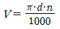
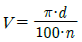
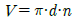
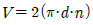
(정답률: 60%)
39. 단식분할법을 이용하여 밀링가공으로 원을 중심각
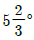
씩 분할하고자 한다. 분할판 27구멍을 사용하면 가장 적합한 가공법은?- 분할판 27구멍을 사용하여 17구멍씩 돌리면서 가공한다.
- 분할판 27구멍을 사용하여 20구멍씩 돌리면서 가공한다.
- 분할판 27구멍을 사용하여 12구멍씩 돌리면서 가공한다.
- 분할판 27구멍을 사용하여 8구멍씩 돌리면서 가공한다.
(정답률: 47%)
40. 가스용접에서 사용하는 용접용 가스의 종류가 아닌 것은?
- 수소
- LPG
- 아세틸렌
- 이산화탄소
(정답률: 63%)
3과목: 기계설계 및 기계재료
41. 단판 클러치의 마찰면의 안지름이 80mm이고 바깥지름을 120mm일때 1800rpm에서 전달할 수 있는 최대동력은 약 몇 kW인가? (단, 마찰면의 마찰계수는 0.3이고, 허용면압은 392.4kPa이다.)
- 3.56
- 6.97
- 9.84
- 12.86
(정답률: 20%)
42. 원판 모양의 밸브 디스크가 회전하면서 관을 개폐하여서 유량을 조절하며, 보통 교축밸브(throttle valve)로 사용되는 것은?
- 나비형 밸브
- 슬루스 밸브
- 스톱 밸브
- 콕
(정답률: 73%)
43. 그림과 같은 블록브레이크에서 드럼이 우회전할 때, 레버를 누르는 힘 F를 구하는 식은? (단, f는 브레이크의 제동력이고, μ는 블록 브레이크와 드럼 사이의 마찰계수이다.)
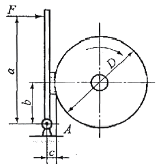
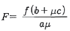
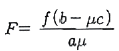
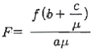
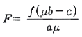
(정답률: 47%)
44. 다음 중 헬리컬 기어와 같이 레이디얼 하중과 동시에 상당히 큰 스러스트 하중이 작용하는 장치에 사용하기 적합한 베어링은?
- 단열 깊은 홈 볼베어링
- 복력 자동조심형 레이디얼 볼베어링
- 원통 롤러 베어링
- 테이퍼 롤러 베어링
(정답률: 69%)
45. 기본부하 용량이 18000N인 볼베어링이 베어링 하중 2000N을 받고 150rpm으로 회전할 때, 이 베어링의 b수명은 약 몇 시간인가?
- 9000시간
- 81000시간
- 168000시간
- 4860000시간
(정답률: 60%)
46. 구동차의 지름이 300mm이고 600rpm의 회전수로 구동되는 외접 원통마찰차 접촉면 사이에 2000N의 힘으로 밀어붙이면 약 몇 kW의 동력을 전달할 수 있는가? (단, 접촉부의 마찰계수는 0.35이다.)
- 2.35
- 6.60
- 8.81
- 18.83
(정답률: 36%)
47. 스팬= 1200mm, 폭 100mm, 판의 두께 10mm의 양단(兩端)지지 겹판스프링에서 중앙에 10.44kN의 집중하중이 작용할 때 스프링의 판은 최소 몇 장 이상이어야 하는가? [단, 재료의 허용 굽힘응력은 441.45MPa이고, 밴드의 폭 e=140mm이며, 유효스팬의 길이 ℓ1은 (ℓ1=ℓ-0.6e)로 한다.]
- 6장
- 5장
- 4장
- 3장
(정답률: 알수없음)
48. 웜 기어 전동장치에서 웜 휠의 피치원 지름이 60mm, 웜의 리드가 4m일 때, 속도비 I=N2/N1의 값은 얼마인가? (단, N1: 웜의 회전속도(rpm), N2 : 웜 휠의 회전속도(rpm)이다.)
- 15
- 1/15
- 24
- 1/24
(정답률: 20%)
49. 사각나사에서 효율(效率)이 최대로 되는 리드각 α는 다음 중 어느 것인가? (단, 마찰계수는 μ=tanρ이고, ρ는 마찰각이다.)
- α=45°-ρ/2
- α=45°+ρ/2
- α=45°-ρ
- α=45°+ρ
(정답률: 69%)
50. 동일재료로 제작된 중실축과 중공축이 있다. 중실축의 외경(d)=40mm이고, 중공축의 외경 내경 일 때, 이들 두 축의 비틀림 강도가 동일하기 위한 중공축의 외경은 약 몇 mm 인가?
- 32
- 42
- 52
- 62
(정답률: 9%)
51. 저 망간강으로 항복점과 인장강도가 큰 것을 무엇이라 하는가?
- 하드필드강
- 쾌삭강
- 불변강
- 듀콜강
(정답률: 19%)
52. 다음 중 KS 기호가 STD로 표기되는 강재는?
- 탄소공구강
- 초경공구강
- 다이스강
- 고속도강
(정답률: 50%)
53. 배빗메탈 이라고도 하는 베어링용 합금인 화이트메탈의 주요성분으로 옳은 것은?
- Pb-W-Sn
- Fe-Sn-Cu
- Sn-Sb-Cu
- Zn-Sn-Cr
(정답률: 40%)
54. 탄소강에서 템퍼링(tempering)을 하는 주된 목적으로 가장 적합한 것은?
- 조직을 조대화하기 위해서 행한다.
- 편석을 없애기 위해서 행한다.
- 경도를 높이기 위해서 행한다.
- 스트레인(strain)을 감소시키기 위해서 행한다.
(정답률: 34%)
55. 하나의 액체에서 고체와 다른 종류의 액체를 동시에 형성하는 반응은?
- 초정반응
- 포정반응
- 공정반응
- 편정반응
(정답률: 54%)
56. 켈밋 합금(kelmet alloy)에 대한 사항 중 옳은 것은?
- Pb-Sn 합금, 저속 중하중용, 베어링합금
- Cu-Pb 합금, 고속 고하중용, 베어링합금
- Sn-Sb 합금, 인쇄용 활자합금
- Zn-Al-Cu 합금, 다이캐스팅용 합금
(정답률: 37%)
57. 합금 주철에서 강한 탈산제인 동시에 흑면화를 촉진하며 주철의 성장을 저지하고 내마모성을 향상시키는 원소는?
- 니켈
- 티탄
- 몰리브덴
- 바나듐
(정답률: 알수없음)
58. 선철의 파면 색깔이 백색을 나타낸 경우 함유된 탄소의 상태는?
- 대부분이 흑연상태로 존재
- 대부분이 산화탄소로 존재
- 탄소함유량이 0.02% 이하로 존재
- 대부분이 Fe3C 금속간 화합물로 존재
(정답률: 50%)
59. 심냉(sub-zero)처리의 목적을 바르게 설명한 것은?
- 자경강에 인성을 부여하기 위함
- 담금질 후 시효변형을 방지하기 위해 잔류오스테나이트를 마텐자이트 조직으로 얻기 위함
- 항온 담금질하여 베이나이트 조직을 얻기 위함
- 급열·급냉시 온도 이력현상을 관찰하기 위함
(정답률: 70%)
60. 일반적으로 합금의 석출 경화와 관계가 없는 것은?
- 냉각 속도
- 석출 온도
- 과냉도
- 회복
(정답률: 42%)
4과목: 기구학 및 CAD
61. 곡면 모델링 시스템(surface modeling system)에서 곡면을 생성하기 위하여 주로 사용하는 방법과 가장 거리가 먼 것은?
- 곡면 상의 점들을 입력하여 보간 곡면을 생성
- 솔리드(solid)의 위상(topology) 정보를 사용하여 곡면을 생성
- 주어진 곡선을 직성이동 또는 회전이동하여 곡면을 생성
- 곡면 상의 곡선들을 그물 형태로 입력하여 보간 곡면을 생성
(정답률: 43%)
62. 구성되어 있는 곡면에서 곡면의 매개변수 u=0.5, v=0.7의 지정에 의해 얻어지는 도형 요소는?
- 점(point)
- 직선(line)
- 곡선(curve)
- 원(circle)
(정답률: 59%)
63. 경계표현법(B-Rep)에 의하여 표현되는 단순다면체를 구성하는 면 개수(F), 모서리 개수(E), 꼭지점 개수(V) 간의 관계는 오일러-포앙카레(Euler-Poincare) 공식으로 표현할 때 맞는 것은?
- 2F - E - V = 2
- F + E - V = 6
- F + 2E - 3V = 4
- F - E + V = 2
(정답률: 55%)
64. CAD 시스템에서 곡선의 표현방식으로 유리식을 사용하는 경우 그 주된 이유는?
- 수식이 간단하다.
- 2차 곡선들의 통합된 표현으로 가능하다.
- 미분값을 구하기가 더 쉽다.
- 적분값을 구하기가 더 쉽다.
(정답률: 알수없음)
65. CAD의 그래픽 장치로써 래스터 그래픽(raster display)장치와 벡터 그래픽(vector display) 장치를 비교할 때 래스터 그래픽 장치의 장점이 될 수 있는 것은?
- 주사선이 도형의 형상을 따라 움직인다.
- 직선을 재그(jag)없이 항상 직선으로 쉽게 나타낼수 있다.
- 주사변환(scan conversion)이 필요하지 않다.
- 이미지의 복잡성에 관계없이 일정한 속도로 화면리프레쉬(refresh)가 가능하다.
(정답률: 39%)
66. CAD 시스템간의 기하 데이터 교환 형식으로 볼수 없는 것은?
- IGES
- STEP
- DXF
- SGML
(정답률: 37%)
67. 다음 조립체 모델링에 대한 설명 중 틀린 것은?
- 조립체 모델링(assembly modeling)은 개별 부품들을 조립체 또는 부조립체로 묶을 수 있는 논리적 구조를 제공하며, 사용자는 부품간의 연결과 관련해서 형상 정보를 다시 입력해야만 한다.
- 일반적으로 조립체 설계 시스템은 부품을 위치시키고, 부품 사이의 관계를 정의하고, 관련 데이터를 조회할 수 있는 탐색기를 가지고 있다.
- 인스턴스(instance)는 볼트 등과 같이 많이 사용되는 부품을 하나의 모델만 저장해놓고 필요한 만큼 여러 곳에 개체를 만들어 위치시킴으로써 조립체를 상당히 단순화시킬 수 있게 한다.
- 응축(agglomeration)은 전체 조립체 혹은 부조립체를 단일 모델로 그룹화시켜 놓은 것으로 부품끼리 맞닿고 있는 내부의 형상은 사라지고 단지 외관의 상세부만 남게 된다.
(정답률: 50%)
68. 다음 중 일반적으로 2차원 좌표계에서 수행되는 기하학적 변환이 아닌 것은?
- 이동(translation)
- 축소확대(scaling)
- 회전(rotation)
- 평행투영(parallel projection)
(정답률: 50%)
69. 다음은 3차 B-spline 곡선과 3차 Bezier 곡선에 대한 설명이다. 올바른 것은?
- 두 곡선 모두 시작점과 끝점을 통과한다.
- 두 곡선 모두 다항함수를 기본 골격으로 하고 있다.
- B-spline 곡선이 조건이 더 많아 Bezier 곡선보다 조정점 수가 많다.
- m(m>1)개 곡선을 연결할 경우, 양 곡선의 조정점 수는 항상 같다.
(정답률: 22%)
70. 다음 중 솔리드 모델에 관한 서술에 해당하지 않는 것은?
- 파라메트릭 모델링이 가능하다.
- 특징형상 모델링이 가능하다.
- 모든 서피스 모델은 솔리드 모델로 전환할 수 없다.
- 서피스 모델 정보 추출이 가능하다.
(정답률: 30%)
71. 축간 거리를 가장 크게 할 수 있는 전달 장치는?
- 평 벨트
- V 벨트
- 롤러 체인
- 사일런트 체인
(정답률: 63%)
72. 인벌류트 치형에서 압력각을 크게할 때 생기는 현상이 아닌 것은?
- 이의 강도가 향상된다.
- 물림율이 증대 된다.
- 언더컷을 일으키는 최소잇수가 감소한다.
- 미끄럼율이 작아진다.
(정답률: 알수없음)
73. 교량이나 건축물의 구성체 처럼 서로 운동도 없고 일도 하지 않는 것은?
- 기계
- 기구
- 구조물
- 연장
(정답률: 알수없음)
74. 다음 중 왕복 이중 슬라이더 기구의 대표적인 것으로 경사각 90˚ 로 만들어져 소형냉장고 등의 냉매 압축기로 쓰이는 것은?
- 진자 펌프(pendulum pump)
- 타원 컴퍼스(elliptic trammels)
- 스코치 요크(scotch yoke)
- 올덤 커플링(oldhams coupling)
(정답률: 57%)
75. 마찰구동에서 두 축이 평행하지도 교차하지도 않으며 쌍곡선의 일부를 이용한 마찰차는?
- 원추차
- 원통차
- 스큐차
- 구면차
(정답률: 36%)
76. 평벨트 바로 걸기에서 두 벨트 풀리의 직경을 D1, D2 축간 길이를 C 라 하면 벨트 소요 길이 L을 구하는 식으로 맞는 것은? (단, D2 >D1 이며, 벨트는 두께를 무시하고 두 풀리에 걸었을 때 정지 및 회전 상태에서 처짐 없이 직선으로 걸려 있다고 가정한다.)
- L=(π/2)(D1+D2)+[(D2-D1)2/4C]+2C
- L=(π/2)(D1-D2)2+[(D2-D1)/4C]+2C
- L=(D1-D2)+[(D2+D1)2/4C]+C
- L=(D1-D2)2+[(D2-D1)/4C]+C
(정답률: 46%)
77. 다음 그림에서 길이 60mm의 기소
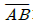
가 점 A를 중심으로 회전할 때, 기소의 각속도 ω=10 rad/s이라면 점 B의 속도 VB는 몇 m/s인가?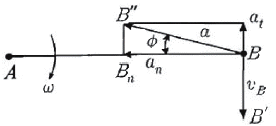
- 0.3
- 0.6
- 3
- 6
(정답률: 50%)
78. 4절 크랭크 체인을 이용함으로써 작은 힘을 작용시켜 큰 힘을 내게 하는 것은?
- 크로스 슬라이더
- 배력 장치
- 쌍 레버 기구
- 래칫 휠
(정답률: 62%)
79. 캠 선도에서 변위곡선이 직선으로 나타날 때 캠은 어떤 운동을 하는가?
- 등가속도 운동
- 등속도 운동
- 요동 운동
- 단순 조화 운동
(정답률: 64%)
80. 다음 그림과 같은 기어열에서 속도비가 1/24일 때, 각 기어의 잇수로 적당한 것은?
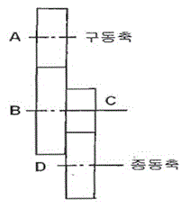
- ZA=20, ZB=40, ZC=120, Z0=60
- ZA=20, ZB=80, ZC=20, Z0=120
- ZA=20, ZB=60, ZC=120, Z0=20
- ZA=20, ZB=70, ZC=60, Z0=120
(정답률: 63%)